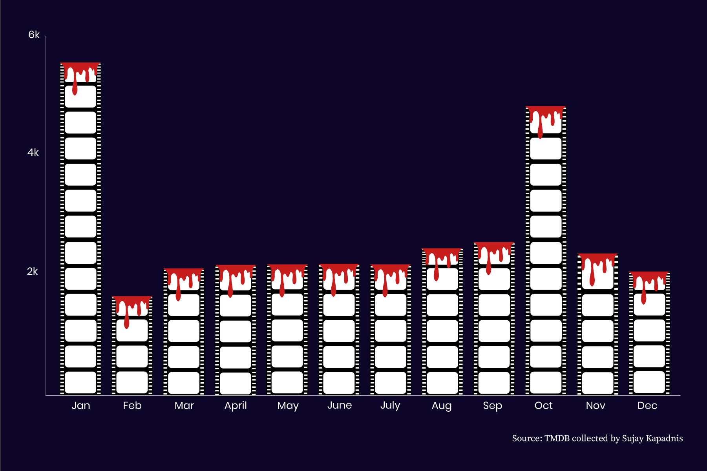
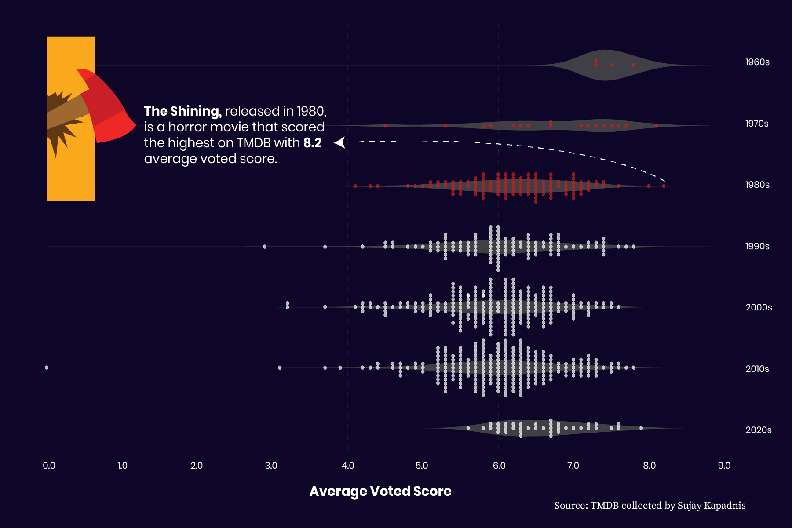
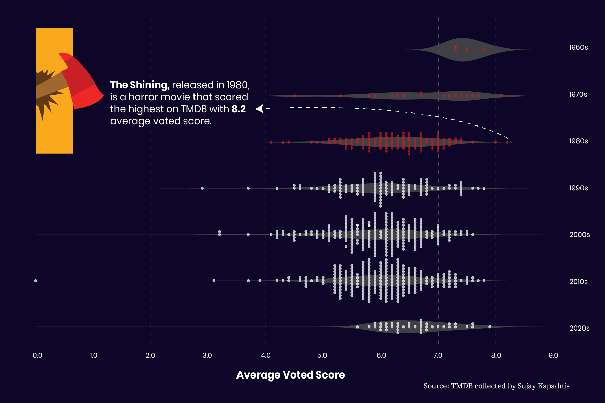

Spooky season isn’t
just in October:
Examining the data around horror movies
By Molecule Jongwilai
This scrolly-telling story is best experienced on a desktop or widescreen display.
By Molecule Jongwilai
This scrolly-telling story is best experienced on a desktop or widescreen display.
With the Halloween season underway, it is easy to assume that October is the biggest time of the year for horror movies. However, data from The Movie Database (TMDB) website shows audiences love spooky movies year round; January was the most popular month for releasing scary films while the summer and holiday seasons tend to be the best times for horror movies to become box office hits. Spooky season isn’t just in October.
Capital News Service analyzed data about horror movies released between 1950 and 2022 from TMDB and found five interesting facts about these spooky films that help us understand them a little better.
Of the over 30,000 horror movies released between 1950 and 2022, TMDB data shows that January was the top month for horror releases, with almost 5,600 films released in January over the 72 year period. October was in second place for horror films' release with almost 4,900 movies released on Halloween month between 1950 and 2022.
Around 720 horror films in the dataset had a budget of at least $1 million and produced at least that same amount in revenue. Most horror movies were made for under $50 million and rarely earned more than $200 million in revenue.
There are exceptions. World War Z, The Meg or The Mummy, which all cost over $100 million to make, managed to become blockbuster hits that made over $400 million in revenue, and a rare case like It made more than $700 million from only a $35 million budget.
It is rare for horror films to earn more than $300 million at the box office. Most that accomplished this milestone, including Jaws, It Chapter Two or The Exorcist, were released during the summer movie season, between June and September, or around the holidays in December.
According to the TMDB’s average voted scores, many horror movies were rated between 5.0 and 7.0 and films released between 1960 and 1989, including Rosemary’s Baby, Alien or The Thing, tended to receive better scores than films from other decades.
 

TMDB data show that a movie’s budget and duration do not necessarily correlate with its audience score. The vast majority of films in the dataset were rated between 4.0 and 8.0. This includes low-budget movies like The Shining, which scored 8.2, and those with more than $100 million in production, like The Mummy, with a score of 5.5.
Runtime also did not seem to be a factor in ratings. The zombie film [REC], with only an hour runtime, rated a score of 7.2 and the sci-fi horror film DreamCatcher, at over two-hours long, scored 5.5.
So far, 2025 has been a strong year for horror movies. Box office successes like The Conjuring: Last Rites and Final Destination Bloodlines made over $300 million with a budget of around $50 million. There have also been several critically acclaimed films, including Sinners, Companion and Weapons, with an above 90% Rotten Tomatoes score which may be worth adding to your Letterboxd watchlist this Halloween.
By Molecule Jongwilai | Capital News Service